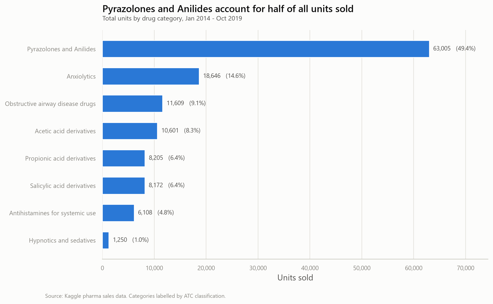
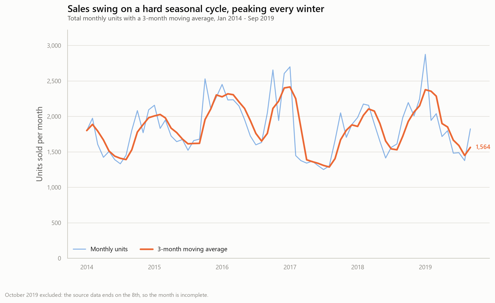
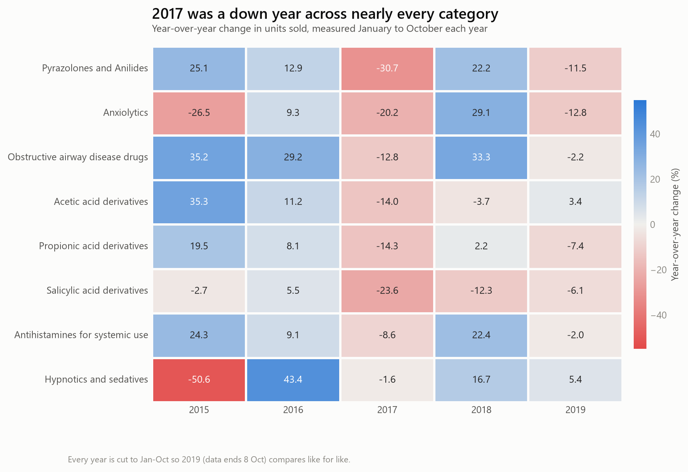

Results
What six years of sales actually show
Three charts, generated straight from visualize.py against the same database the Methodology page queries directly. Each one below is paired with what it means for the business, not just what it shows.

Half the business is one drug category
Pyrazolones and Anilides are 49.4% of all volume — nearly 3.4× the next category. Six of eight categories sit under 10% each. Inventory and supplier leverage should be concentrated accordingly, and the same number is a single-point supply risk worth flagging.

Demand runs on a hard winter cycle
Averaged across all six years, January runs about 59% above July (2,328 vs 1,460 units). The cycle is reliable enough to plan a staffing and stock calendar around rather than ordering to a flat annual average.

2017 was bad everywhere — one category never came back
2017 is negative for all eight categories — Pyrazolones fell 30.7%, Salicylic acid derivatives 23.6% — a downturn too broad to be eight separate product problems. Salicylic acid derivatives is the one category that never recovered: negative in four of its five comparison years, and the only one that sat out the 2018 rebound entirely.
So what
Turning the charts into decisions
| Finding | Business risk | Suggested action |
|---|---|---|
| 49.4% of volume in one category (Pyrazolones and Anilides) | A single supply disruption could hit roughly half of unit throughput | Multi-supplier terms and a contingency stock buffer for this ATC class |
| January runs ~59% above July, every year | Flat ordering means January stockouts and July dead capital | Move to a seasonal reorder calendar, front-load stock by November |
| Salicylic acid derivatives down 4 of the last 5 years | Capital tied up in a structurally shrinking line | Review for delisting, reformulation, or repositioning |
What's next
Where this goes from here
The Python/SQL pipeline is complete for what it set out to do. One extension — a Power BI dashboard — is already underway, covered on its own page. These are the rest of the honest next steps.